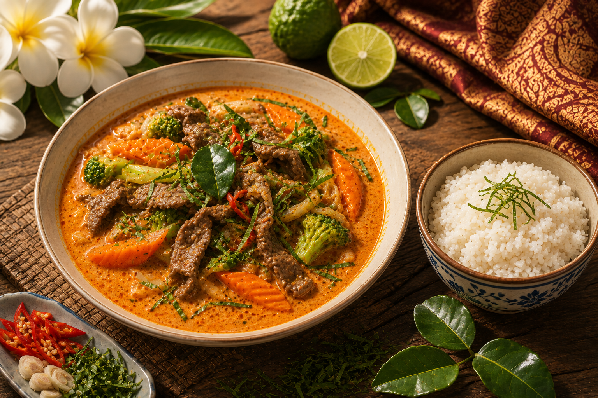

Beef Panang Curry
A velvet river of coconut curry, carrying tender beef through fragrant kaffir lime, warming spices, and the slow-burning glow of red chilies—a rich Thai embrace in every spoonful.

Ingredients
- Dried red chilies
- Shallot
- Garlic
- Galangal
- Lemongrass
- Kaffir lime zest
- Salt
- Shrimp paste
- Beef
- Coconut milk
- Fish sauce
- Beef broth
- Palm sugar
- Soy sauce
- Carrots
- Cauliflower
- Broccoli
- Capsicum
- Chopped kaffir lime leaves
- Chopped fresh red chilies
- Served with hot rice
- Dairy-free & gluten-free
Price: $20
Orders close:
COB Thursday July 09
(Payment confirms your order)
Pickup: Wednesday July 15, 12.30pm
Take-home packs available.
To ensure food quality, all take-home meals are prepared, chilled, packaged, and labelled
in a takeaway container, ready for collection. A $1 container surcharge applies.
Please indicate your preference when ordering.
Limited availability. Order soon!
Place Order